Kazamaura
Kazamaura · Aomori
Kazamaura
Highlighted on the Aomori map.
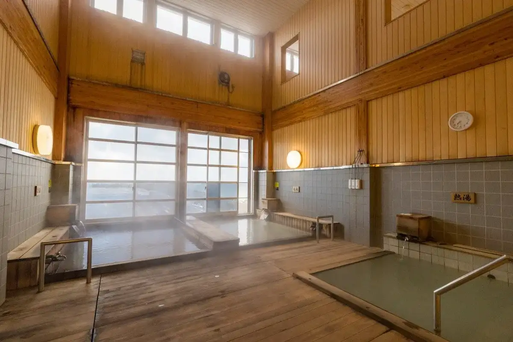
Stay
坪田旅館
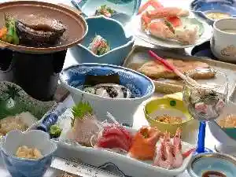
Tsubota Ryokan
下風呂観光ホテル 三浦屋
Kafuu Ro Kankou Hoteru Miura Ya
ホテルニュー下風呂
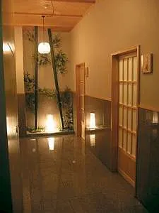
Hoterunyuu Kafuu Ro
Dining
活イカ備蓄センター
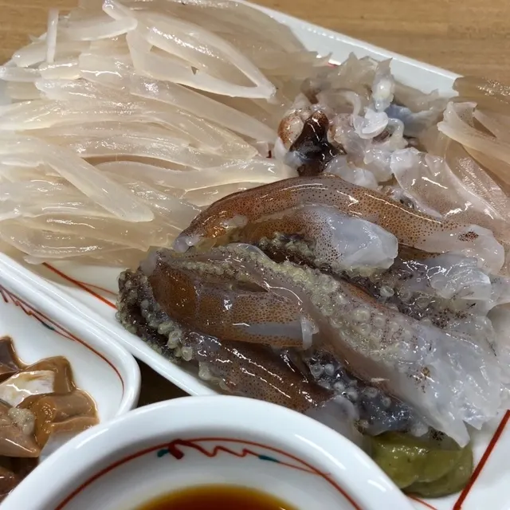
Katsu Ika Bichiku Sentaa
おおぎや旅館
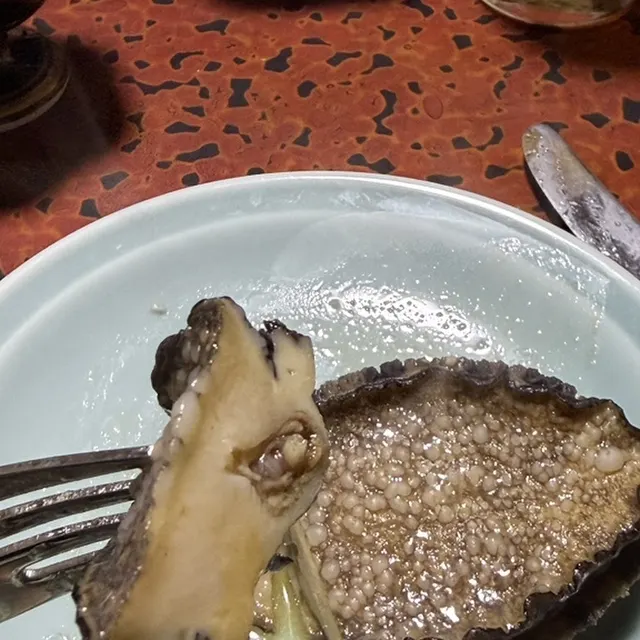
Oogiya Ryokan
佐々木旅館
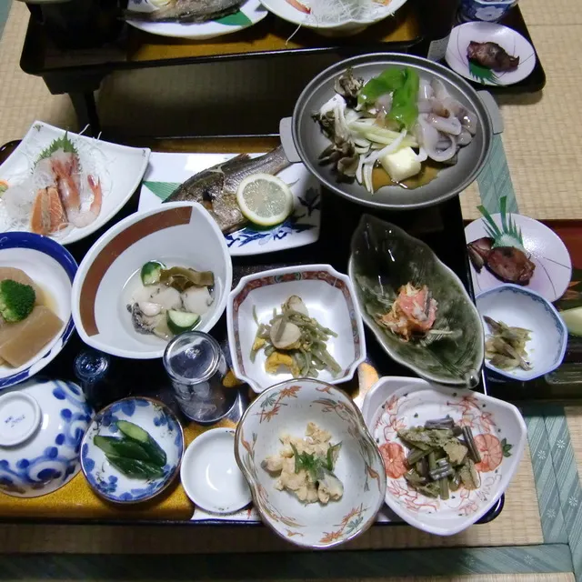
Sasaki Ryokan
下風呂 おんせん食堂
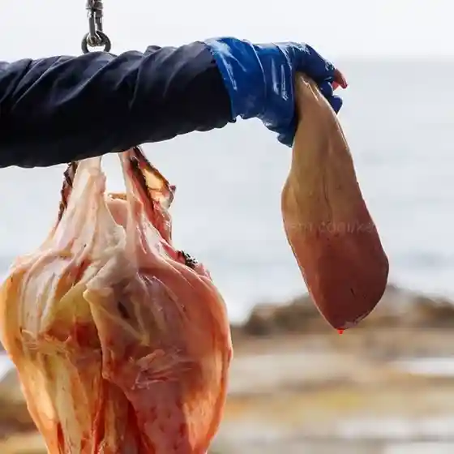
Kafuu Ro Onsen Shokudou
ばんやめし
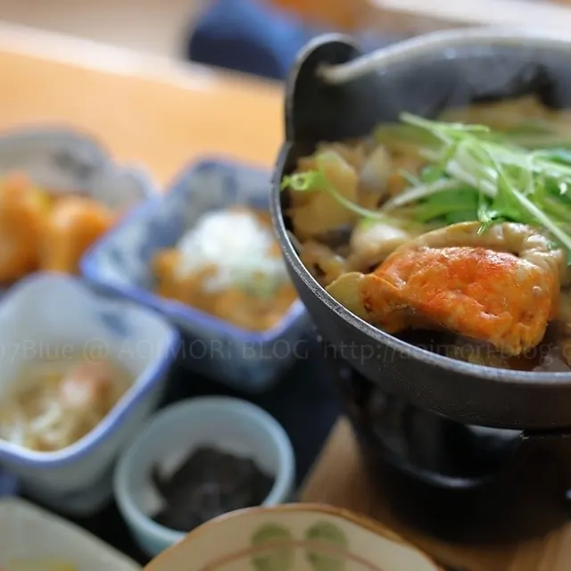
Banyameshi
あさの食堂
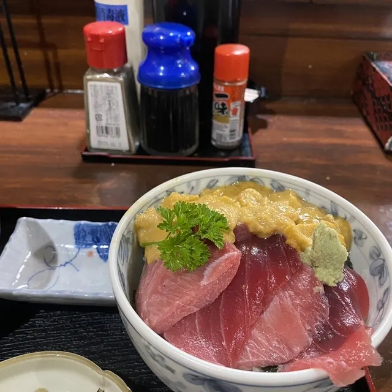
Asano Shokudou
シモフロカフェ
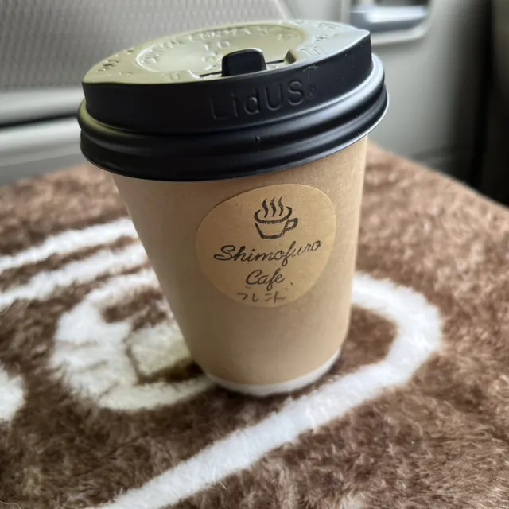
Shimofurokafe
ホテルニュー下風呂
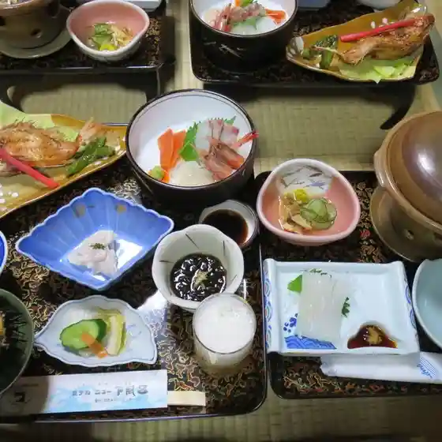
Hoterunyuu Kafuu Ro
坪田旅館
Tsubota Ryokan
居酒屋 来よ乃 いちり
Izakaya Koyo No Ichiri
漁火の宿 三浦屋
Isaribi No Yado Miura Ya
かのざわ民宿
Kanozawa Minshuku
さつき荘
Satsuki Sou
さが旅館
Saga Ryokan
民宿 三井
Minshuku Mitsui
桑畑温泉 湯ん湯ん
Kuwahata Onsen Yu N Yu N
まるほん旅館
Maruhon Ryokan
民宿 菅原
Minshuku Sugawara
Sights
Shimofuro Onsenkyo Hot Spring Village
Shimofuro Onsen Hot Spring is the northern-most hot spring in Honshu, and there are about dozen each hot spring hotels and Japanese guest homes.
Kuwahata Onsen Yun Yun
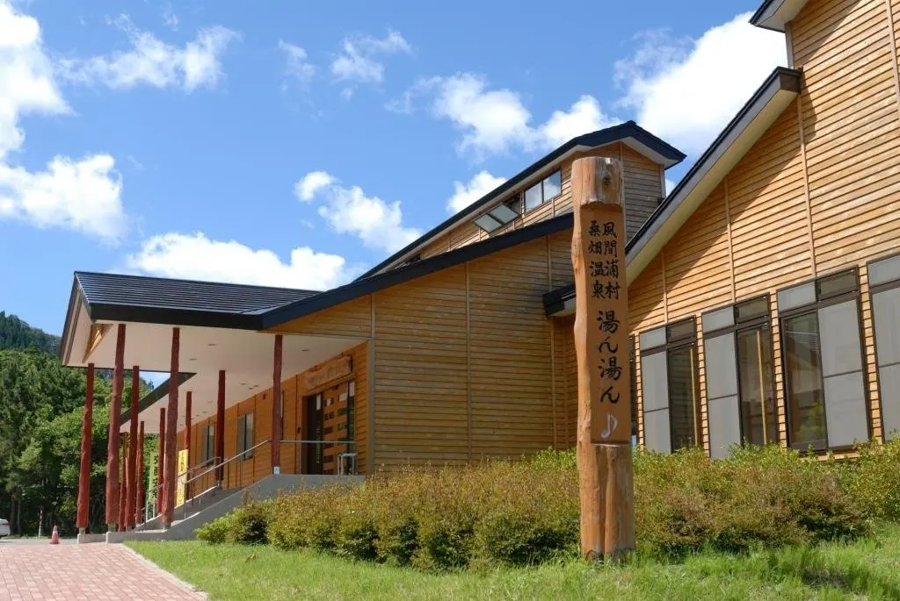
Village-run day hot spring on a former school site 30 m above the Tsugaru Strait, with outdoor bath and sauna.
Waido no Ki Aomori Hiba Shop
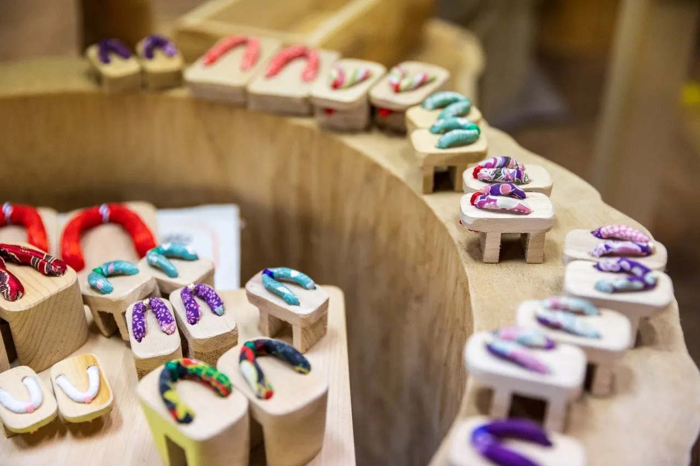
Shop making and selling Aomori hiba cypress products, including custom orders.
Kazamaura Tourism Association
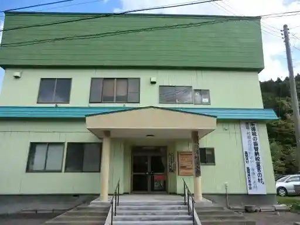
Tourist information for the Shimofuro Onsen hot spring town overlooking the Tsugaru Strait.
Kaikyo Isaribi Park
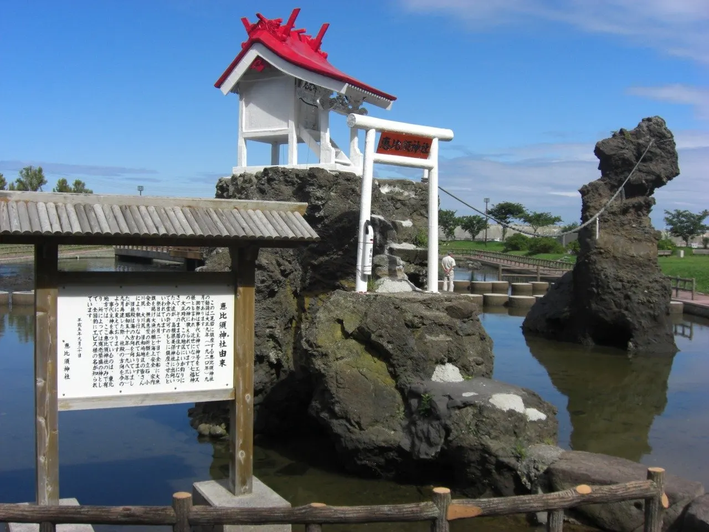
Seaside park at Shimofuro Onsen with the Futamiiwa twin rocks and an Ebisu shrine for safe fishing.
Tsugaru Strait Light Fishing Experience
Squid-style night fishing just 5 minutes from port, with local fishermen teaching beginners.